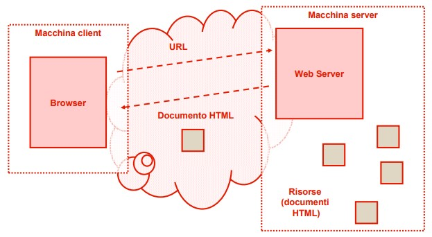
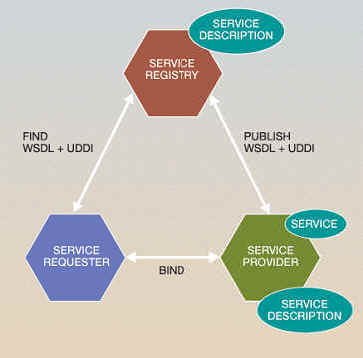

Dal Client/Server ai web services - Descrizione
Definizioni
Client: è un classico computer, ad esempio, un desktop, un notebook, un netbook, uno smartphone o un tablet, in generale qualsiasi dispositivo (device) capace di connettersi a Internet.
Server: sono sistemi (o sottosistemi) di elaborazione che forniscono differenti tipi di servizi ad altri sistemi (Client) che ne fanno richiesta in una rete di calcolatori (locale o geografica).
Web Service: un servizio disponibile in rete ad uso di altri programmi, che può essere pubblicato, localizzato e invocato attraverso il Web.

Tre componenti dei Web Service
L’architettura che sta alla base dei Web services è sempre la stessa, indipendentemente dai Web services specifici dei vari fornitori utilizzati.
L’architettura descrive le interazioni tra tre componenti principali:
- Web Service Provider: Il Web Service Provider sviluppa e definisce i Web Services e li pubblica poi all’interno dei Web Service Registries, oppure li rende direttamente disponibili ai Web Service Requester.
- Web Service Requester: Il Web Service Requester effettua un’operazione di ricerca per localizzare i servizi desiderati resi disponibili dai Web Service Provider e poi richiedono questi stessi servizi ai Web Service Registries oppure direttamente al luogo della loro pubblicazione.
- Web Service Registries: I Web Service Registries si comportano come directory centralizzate, e sono depositari dei Web Services definiti e pubblicati dai Web Service Provider.

Vantaggi
- Interoperabilità
- Tutti i Web Services possono interagire tra loro.
- Accessibilità
- Tutti i dispositivi, che supportano fondamentalmente le tecnologie HTTP e XML, possono accedere ai Web Services e consumarli.
- Riuso di componenti
- Gli sviluppatori potranno usare un ampio numero di Web Services, forniti da terzi parti, da integrare nelle proprie applicazioni.
- Nuovi canali di comunicazione
- Si può far leva sugli investimenti fatti nell’infrastruttura Internet per realizzare nuovi canali di comunicazione per raggiungere i propri clienti.
Ulteriori punti a favore sono:
-
Non è necessario installare software sui client quindi è possibile cambiare PC senza spostare dati.
-
I dati sono al sicuro sui server (con aggiornamento, antivirus...)
-
Anche se i dati sono su in un unico database gli utenti possono avere diversi livelli di accesso in base ai loro privilegi.
Vincoli:
-
Per l’utilizzo è sempre necessaria una connessione ad internet.
-
È sempre previsto un piccolo canone annuale per l’utilizzo del server gestito da terzi.
-
Possono esistere delle limitazioni tecnologiche dovute alla tipologia di implementazione del server.